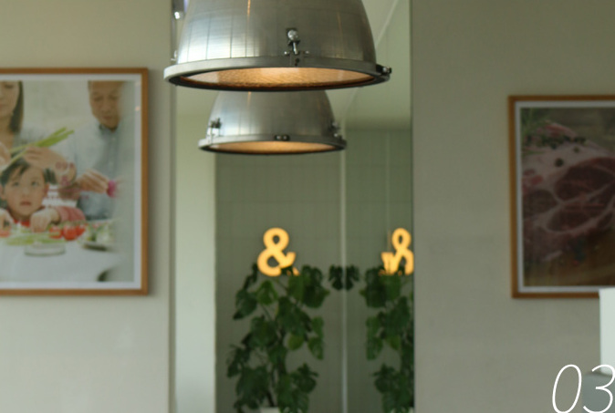

서가앤쿡은 2006년 대구 동성로에서 [서가] 라는 10평
남짓의 작은 레스토랑에서
레몬 생맥주와 푸짐한 음식을 판매하는 것을 시작으로
2007년부터 [서가앤쿡] 으로
브랜드네임을 런칭하면서 본격적인 레스토랑 사업을
시작하게 되었습니다.
캐주얼 패밀리 레스토랑의 문화를 만들어낸 서가앤쿡은
신선한 식자재들로 정성껏
요리하여 남녀노소 누구에게나 사랑받고 있습니다.
그 시절
계란프라이처럼 따뜻했던
기억을 연결합니다.
따끈따끈한 밥 위에 올라간 계란 하나로 우리의 마음을
따뜻하게 했던 기억들.
이렇듯 계란은 반찬 그 이상의 의미가 담겨 있습니다.
지금은 흔한 음식이지만 그 옛날에는 귀한 손님이 오셨을
때만 특별히 정성스럽게
내오던 계란 프라이. 지금도 그때 그 시절을 생각하면
마음이 푸근해지는 건 어쩔 수
없습니다. 메뉴마다 올라간 계란 프라이는 귀한 손님에게
대접하던 그 마음과
정성을 그대로 담았습니다.
SEOGA&COOK에
[&,그리고]
브랜드를 표현하는 핵심입니다.
나&너 / 부모&자녀 / 남자친구&여자친구 등 서가앤쿡을
상징하는
"함께" 의 개념입니다. 서가앤쿡의 모든 것은 일상생활에서
특별한 날까지 모든 순간을 함께하는 것을 통해
완성됩니다. 더불어, 정성과 서가앤쿡 / 좋은재료와
서가앤쿡 / 감각적인 시간과 서가앤국 등 추상적
브랜드 가치와 함께하는 서가앤쿡을 설명하고 있습니다.

Seogaandcook
Menuintroduction
Seogaandcook
마리게리타 피자로마 피자의 정석
자신있게 내놓은 메뉴
상큼한 토마토와 향긋한 바질 향의
엑스트라 버진 올리브오일을 듬뿍
가장 기본적인 로마 피자
Seogaandcook
목살 스테이크두툼한 두께와 육즙 가득한
서가앤쿡 시그니처 스테이크
부드럽게 구운 최상급 목살 스테이크와
서가앤쿡만의 특별한 갈릭 드레싱을 더한
베스트셀러
Seogaandcook
게살 오이스터 파스타중독성 강한 서가앤쿡의
대표 파스타 메뉴
부드러운 게살과 오이스터 소소의 절묘한 조화
한번 먹으면 잊지 못하는,
스테디셀러 파스타
Seogaandcook
새우 필라프먹어본 사람은 아는
서가앤쿡 히든 베스트 메뉴
큼직한 새우를 넣고 맛있게 볶아
탱글한 새우의 식감을 느낄 수 있는 메뉴
Seogaandcook
에이드함께 먹어도 푸짐한
서가앤쿡다운 대용량 에이드
할라봉에이드 / 청포도에이드 / 자몽에이드 / 딸기에이드
레몬에이드 / 패션후르츠 에이드 / 라임민트 에이드
가장 기본적인 로마 피자
Seogaandcook
Since 2006Enjoy Together
커다란 접시에 맛있는 음식을 푸짐하게 담고 서로 행복하게
나눠 먹으며 즐거운 웃음이 멈추지 않는 순간.
이런 풍경의 시간은 서가앤쿡이 존재하는 이유입니다.
서가앤쿡은 집에서 먹는 편안하고 행복한 식사처럼 언제나
따뜻한 장소로 기억되기를 바랍니다.